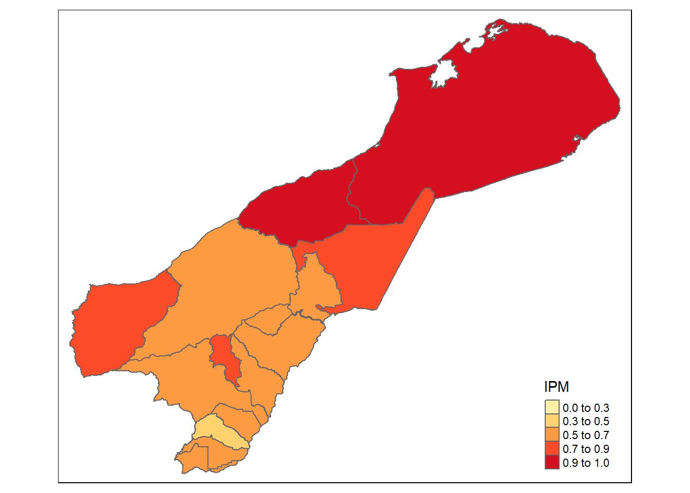
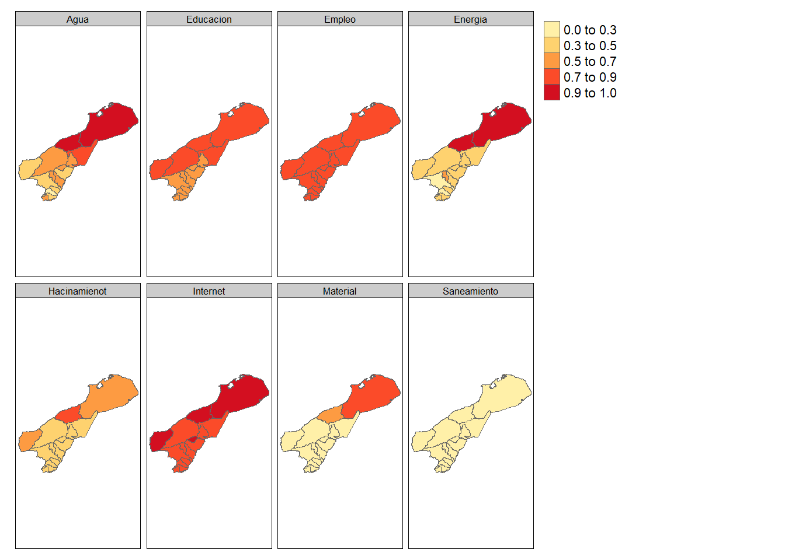
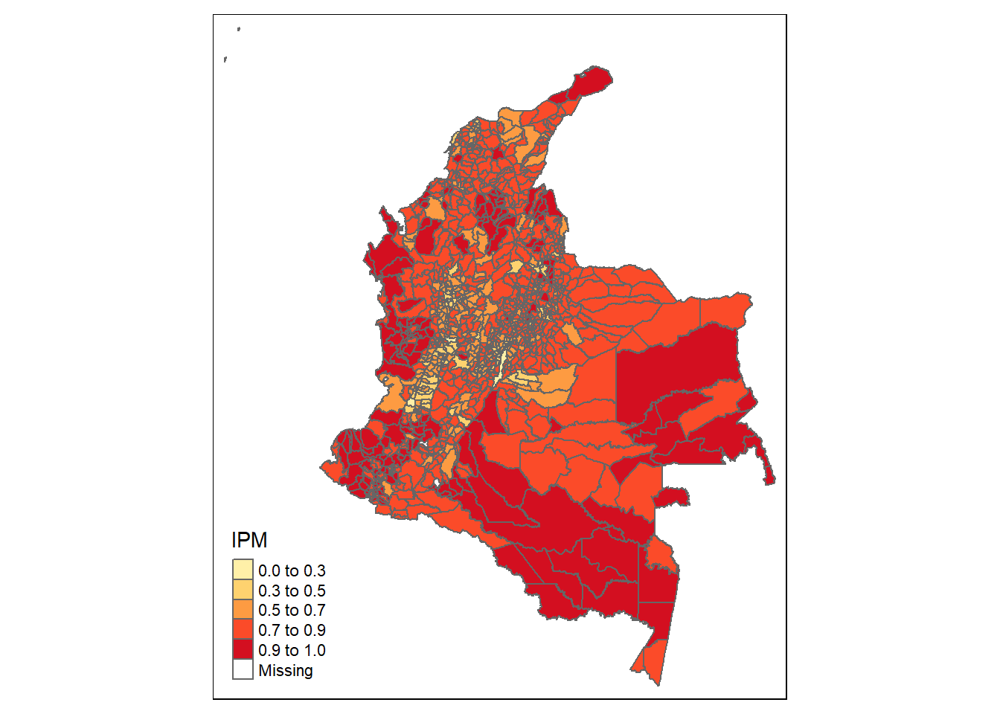

rm(list =ls())
library(patchwork)
library(lme4)
library(tidyverse)
library(rstan)
library(rstanarm)
library(magrittr)Estimación del Índice de Privación Multidimensional (IPM)
CEPAL - División de Estadísticas Sociales
Introducción
La pobreza es, y ha sido, uno de los temas principales en las agendas nacionales e internacionales de los países durante décadas. Un ejemplo reciente es el primer objetivo de la agenda 2030 para el Desarrollo Sostenible (ODS): “Poner fin a la pobreza en todas sus formas en todo el mundo”, así como su indicador 1.2.2 que mide “la proporción de hombres, mujeres y niños de todas las edades que viven en pobreza en todas sus dimensiones según las definiciones nacionales”
Tradicionalmente los organismos nacionales e internacionales exigen la medida de pobreza unidimensional basada en ingresos y/o gastos.
La pobreza es un fenómeno complejo que debe ser analizado considerando un conjunto de factores y no solo el monetario.
En está ocasión se aborda el problema multidimensional de la pobreza utilizando métodos de áreas pequeñas proporcionando una estimación del índice de privación multidimensional (IPM) en Colombia.
Índice de Privación Multidimensional (IPM)
El IPM propuesto por CEPAL es una herramienta comparable entre los países de la región, para estudiar los fenómenos de la pobreza considerando varios aspectos o dimensiones. En ningún caso el IPM busca reemplazar los indicadores pobreza unidimensional o multidimensional que hayan definido los países u organismos internacionales
A continuación se describen las dimensiones que conforma el IPM.

El índice requiere la información para cada individuo \(j = 1,\cdots,N_d\) en \(d = 1, \cdots, D\) dominios, donde \(N_d\) denota el tamaño de la población del dominio \(d\). El índice para el dominio \(d\) se calcula como:
\[ IPM_d = \frac{1}{N_d}\sum_{j=1}^{N_d}I\left(q_{dj} > 0.4 \right). \]
La función del índicador \(I\left( \cdot \right)\) es igual a 1 cuando la condición \(q_{dj} > 0.4\).
\(q_{dj}\) es una cantidad ponderada de la siguiente forma:
\[ q_{dj} = 0.1\sum_{k=1}^{6}y_{dj}^{k} + 0.2\sum_{k=7}^{8}y_{dj}^{k} \]
Donde:
\(y_{dj}^{1}\) = Privación en material de construcción de la vivienda
\(y_{dj}^{2}\) = Hacinamiento en el hogar.
\(y_{dj}^{3}\) = Privación de acceso al agua potable.
\(y_{dj}^{4}\) = Privación en saneamiento.
\(y_{dj}^{5}\) = Acceso al servicio energía eléctrica.
\(y_{dj}^{6}\) = Acceso al servicio de internet.
\(y_{dj}^{7}\) = Privación de la educación.
\(y_{dj}^{8}\) = Privación del empleo y la protección social.
Note que, la primera parte de la suma considera los indicadores de las dimensiones de vivienda, agua y saneamiento, energía y conectividad. La segunda parte, los indicadores de las dimensiones de educación y empleo y protección social. Además, \(y_{dj}^{k}\) es igual a 1 si la persona tiene privación en la \(k-ésima\) dimesión y 0 en el caso que de no tener la privación.
Definición del modelo
En muchas aplicaciones, la variable de interés en áreas pequeñas puede ser binaria, esto es \(y_{dj} = 0\) o \(1\) que representa la ausencia (o no) de una característica específica. Para este caso, la estimación objetivo en cada dominio \(d = 1,\cdots , D\) es la proporción \(\bar{Y}_d = \pi_d =\frac{1}{N_d}\sum_{j=1}^{N_d}y_{dj}\) de la población que tiene esta característica, siendo \(\pi_{dj}\) la probabilidad de que una determinada unidad \(j\) en el dominio \(d\) obtenga el valor \(1\). Bajo este escenario, el \(\pi_{dj}\) con una función de enlace logit se define como:
\[ logit(\pi_{dj}) = \log \left(\frac{\pi_{dj}}{1-\pi_{dj}}\right) = \eta_{dj}=\boldsymbol{x^T}_{dj}\boldsymbol{\beta} + u_{d} \] con \(j=1,\cdots,N_d\), \(d=1,\cdots,D\), \(\boldsymbol{\beta}\) un vector de parámetros de efecto fijo, y \(u_d\) el efecto aleatorio especifico del área para el dominio \(d\) con \(u_d \sim N\left(0,\sigma^2_u \right)\). \(u_d\) son independiente y \(y_{dj}\mid u_d \sim Bernoulli(\pi_{dj})\) con \(E(y_{dj}\mid u_d)=\pi_{dj}\) y \(Var(y_{dj}\mid u_d)=\sigma_{dj}^2=\pi_{dj}(1-\pi_{dj})\).Además, \(\boldsymbol{x^T}_{dj}\) representa el vector \(p\times 1\) de valores de \(p\) variables auxiliares. Entonces, \(\pi_{dj}\) se puede escribir como
\[ \pi_{dj} = \frac{\exp(\boldsymbol{x^T}_{dj}\boldsymbol{\beta} + u_{d})}{1+ \exp(\boldsymbol{x^T}_{dj}\boldsymbol{\beta} + u_{d})} \] De está forma podemos definir distribuciones previas
\[ \begin{eqnarray*} \beta_k & \sim & N(\mu_0, \tau^2_0)\\ \sigma^2_u &\sim & Inversa-Gamma(\alpha_1,\alpha_2) \end{eqnarray*} \] El modelo se debe estimar para cada una de las dimensiones.
Procesamiento del modelo en R.
El proceso inicia con el cargue de las librerías.
Los datos de la encuesta y el censo han sido preparados previamente, la información sobre la cual realizaremos la predicción corresponde a Colombia en el 2019
encuesta_ipm <- readRDS("Data/encuesta_COL.rds")
tasa_desocupados <- readRDS("Data/tasa_desocupacion_COL.rds")
byAgrega <- c("depto", "mpio", "area", "sexo", "etnia",
"anoest", "edad", "condact3" )Agregando la información para los municipios de la Guajira-Colomabia para los indicadores que conformarán el IPM
names_ipm <- grep(pattern = "ipm", names(encuesta_ipm),value = TRUE)
encuesta_df <- map(setNames(names_ipm,names_ipm),
function(y){
encuesta_ipm$temp <- encuesta_ipm[[y]]
encuesta_ipm %>%
group_by_at(all_of(byAgrega)) %>%
summarise(n = n(),
yno = sum(temp),
ysi = n - yno, .groups = "drop") %>%
inner_join(tasa_desocupados,
by = c("depto","mpio"))
})| depto | mpio | area | sexo | etnia | anoest | edad | condact3 | n | yno | ysi | tasa_desocupacion |
|---|---|---|---|---|---|---|---|---|---|---|---|
| 11 | 11001 | 1 | 1 | 3 | 3 | 2 | 1 | 1434 | 5 | 1429 | 0.0176 |
| 47 | 47001 | 1 | 1 | 3 | 3 | 3 | 1 | 1432 | 17 | 1415 | 0.0015 |
| 11 | 11001 | 1 | 2 | 3 | 4 | 3 | 1 | 1387 | 2 | 1385 | 0.0176 |
| 11 | 11001 | 1 | 1 | 3 | 3 | 3 | 1 | 1326 | 7 | 1319 | 0.0176 |
| 08 | 08001 | 1 | 1 | 3 | 3 | 3 | 1 | 1280 | 7 | 1273 | 0.0029 |
| 23 | 23001 | 1 | 1 | 3 | 3 | 3 | 1 | 1236 | 83 | 1153 | 0.0010 |
| depto | mpio | area | sexo | etnia | anoest | edad | condact3 | n | yno | ysi | tasa_desocupacion |
|---|---|---|---|---|---|---|---|---|---|---|---|
| 11 | 11001 | 1 | 1 | 3 | 3 | 2 | 1 | 1434 | 342 | 1092 | 0.0176 |
| 47 | 47001 | 1 | 1 | 3 | 3 | 3 | 1 | 1432 | 657 | 775 | 0.0015 |
| 11 | 11001 | 1 | 2 | 3 | 4 | 3 | 1 | 1387 | 118 | 1269 | 0.0176 |
| 11 | 11001 | 1 | 1 | 3 | 3 | 3 | 1 | 1326 | 251 | 1075 | 0.0176 |
| 08 | 08001 | 1 | 1 | 3 | 3 | 3 | 1 | 1280 | 583 | 697 | 0.0029 |
| 23 | 23001 | 1 | 1 | 3 | 3 | 3 | 1 | 1236 | 503 | 733 | 0.0010 |
Definiendo el modelo multinivel.
Para cada dimensión que compone el IPM se ajusta el siguiente modelo mostrado en el script. En este código se incluye el uso de la función future_map que permite procesar en paralelo cada modelo O puede compilar cada por separado.
library(furrr)
plan(multisession, workers = 4)
fit <- future_map(encuesta_df, function(xdat){
stan_glmer(
cbind(yno, ysi) ~ (1 | mpio) +
(1 | depto) +
edad +
area +
anoest +
etnia +
sexo +
tasa_desocupacion ,
family = binomial(link = "logit"),
data = xdat,
cores = 7,
chains = 4,
iter = 300
)},
.progress = TRUE)
saveRDS(object = fit, "Data/fits_IPM.rds")Terminado la compilación de los modelos después de realizar validaciones sobre esto, pasamos hacer las predicciones en el censo.
Proceso de estimación y predicción
Los modelos fueron compilados de manera separada, por tanto, disponemos de un objeto .rds por cada dimensión del IPM
fit_agua <- readRDS( file = "Data/fit_bayes_agua.rds")
fit_educacion <- readRDS( file = "Data/fit_bayes_educacion.rds")
fit_empleo <- readRDS( file = "Data/fit_bayes_empleo.rds")
fit_energia <- readRDS( file = "Data/fit_bayes_Energia.rds")
fit_hacinamiento <- readRDS( file = "Data/fit_bayes_Hacinamiento.rds")
fit_internet <- readRDS( file = "Data/fit_bayes_internet.rds")
fit_material <- readRDS( file = "Data/fit_bayes_material.rds")
fit_saneamiento <- readRDS( file = "Data/fit_bayes_saneamiento.rds")Ahora, debemos leer la información del censo y crear los post-estrato
censo_ipm <- readRDS("Data/censo_COL.rds")
poststrat_df <- censo_ipm %>%
filter(!is.na(condact3)) %>%
group_by_at(byAgrega) %>%
summarise(n = sum(n), .groups = "drop")Para realizar la predicción en el censo debemos incluir la información auxiliar
poststrat_df <- left_join(poststrat_df, tasa_desocupados,
by = c("depto", "mpio"))
dim(poststrat_df)[1] 281077 10Para cada uno de los modelos anteriores debe tener las predicciones, para ejemplificar el proceso tomaremos el departamento de la Guajira de Colombia
- Privación de acceso al agua potable.
temp <- poststrat_df %>% filter(depto == "44")
epred_mat_agua <- posterior_epred(
fit_agua,
newdata = temp,
type = "response",
allow.new.levels = TRUE
)- Privación de la educación.
epred_mat_educacion <-
posterior_epred(
fit_educacion,
newdata = temp,
type = "response",
allow.new.levels = TRUE
)- Privación del empleo y la protección social.
- Acceso al servicio energía eléctrica.
- Hacinamiento en el hogar.
- Acceso al servicio de internet.
- Privación en material de construcción de la vivienda
- Privación en saneamiento.
Los resultados anteriores se deben procesarse en términos de carencia (1) y no carencia (0) para la \(k-esima\) dimensión .
- Privación de acceso al agua potable.
epred_mat_agua_dummy <-
rbinom(n = nrow(epred_mat_agua) * ncol(epred_mat_agua) , 1,
epred_mat_agua)
epred_mat_agua_dummy <- matrix(
epred_mat_agua_dummy,
nrow = nrow(epred_mat_agua),
ncol = ncol(epred_mat_agua)
)- Privación de la educación.
epred_mat_educacion_dummy <-
rbinom(n = nrow(epred_mat_educacion) * ncol(epred_mat_educacion) ,
1,
epred_mat_educacion)
epred_mat_educacion_dummy <- matrix(
epred_mat_educacion_dummy,
nrow = nrow(epred_mat_educacion),
ncol = ncol(epred_mat_educacion)
)- Acceso al servicio energía eléctrica
epred_mat_energia_dummy <-
rbinom(n = nrow(epred_mat_energia) * ncol(epred_mat_energia) ,
1,
epred_mat_energia)
epred_mat_energia_dummy <- matrix(
epred_mat_energia_dummy,
nrow = nrow(epred_mat_energia),
ncol = ncol(epred_mat_energia)
)- Hacinamiento en el hogar.
- Acceso al servicio de Internet.
- Privación en material de construcción de la vivienda
- Privación en saneamiento.
- Privación del empleo y la protección social.
Con las variables dummy creadas es posible estimar el IPM
epred_mat_ipm <- 0.1 * (
epred_mat_material_dummy +
epred_mat_hacinamiento_dummy +
epred_mat_agua_dummy +
epred_mat_saneamiento_dummy +
epred_mat_energia_dummy + epred_mat_internet_dummy
) +
0.2 * (epred_mat_educacion_dummy +
epred_mat_empleo_dummy)Ahora, debemos dicotomizar la variable nuevamente.
epred_mat_ipm[epred_mat_ipm <= 0.4] <- 0
epred_mat_ipm[epred_mat_ipm != 0] <- 1Finalmente realizamos el calculo del IPM así:
mean(colSums(t(epred_mat_ipm)*temp$n)/sum(temp$n))[1] 0.7362972También es posible utilizar la función Aux_Agregado para las estimaciones.
source("0Funciones/funciones_mrp.R")
Aux_Agregado(poststrat = temp,
epredmat = epred_mat_ipm,
byMap = NULL)| Nacional | mrp_estimate | mrp_estimate_se |
|---|---|---|
| Nacional | 0.7362972 | 0.0163339 |
Para obtener el resultado por municipio procedemos así:
mrp_estimate_mpio <-
Aux_Agregado(poststrat = temp,
epredmat = epred_mat_ipm,
byMap = "mpio")El siguiente paso es realizar el mapa de los resultados
temp_shape <- ShapeSAE %>% filter(depto == "44")
maps <- tm_shape(temp_shape %>%
left_join(mrp_estimate_mpio, by = "mpio"))
brks_ing <- c(0,0.3 ,0.5, .7, 0.9, 1)
tmap_options(check.and.fix = TRUE)
Mapa_ing <-
maps + tm_polygons(
"mrp_estimate",
breaks = brks_ing,
title = "IPM",
palette = "YlOrRd",
colorNA = "white"
)
Mapa_ing
Los resultado para cada componente puede ser mapeado de forma similar.
Para obtener el resultado por municipio procedemos así:

Los resultados nacionales son mostrados en el mapa.
